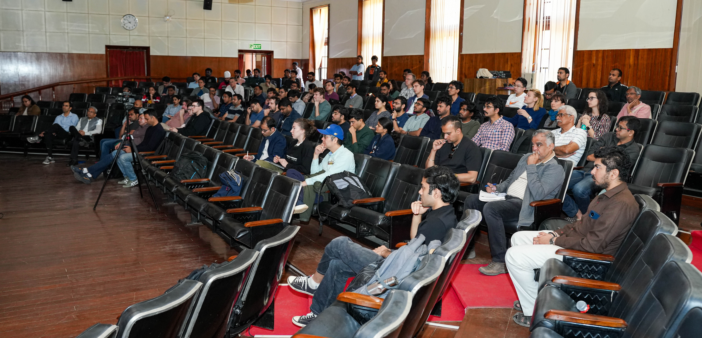
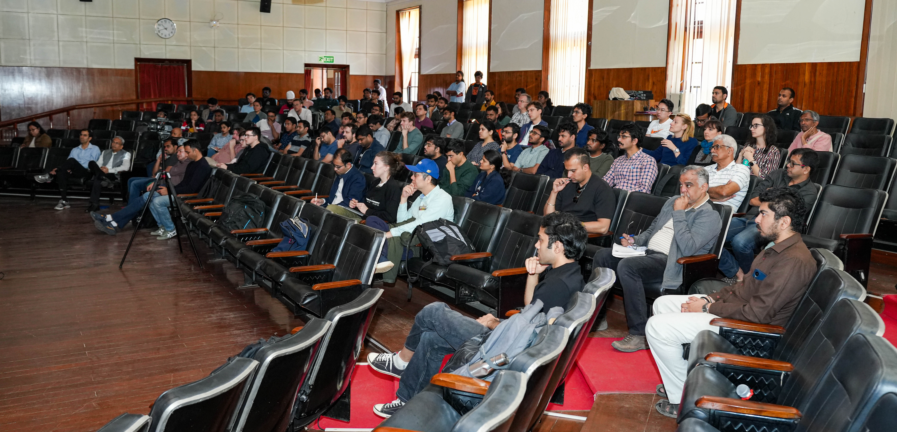

Aim and Vision
The Bangalore Neuromorphic Engineering Workshop is designed to provide first-rate training to upcoming researchers in neuromorphic technologies, building upon the legacy of influential workshops like Telluride and Capo Caccia. These workshops have significantly contributed to the development of vibrant research communities in the US and Europe. Our goal is to replicate this success in the Asia-Pacific region. We aim to equip participants with advanced skills in neuromorphic engineering and to enhance the growth of this critical field on an international scale.
Neuromorphic Engineering Origins
Originating from the innovative work of Carver Mead and Misha Mahowald at Caltech in the 1990s, neuromorphic started with creating brain-like models of neural computation and sensing using traditional VLSI CMOS technologies. The field has expanded to include studies on new memory technologies, development of large-scale spiking neural network chips for advanced computing, and exploring theories of plasticity, learning, and both artificial and natural intelligence.
Industry and Academic Impact
Today, the field of neuromorphic engineering is experiencing widespread adoption by major corporations such as Samsung, Sony, Intel, and IBM, alongside significant support from governmental funding agencies. Recognized as a promising avenue for developing AI computing technologies, neuromorphic approaches offer potential solutions to the inherent limitations and critical challenges faced by conventional computing systems and deep learning methodologies. By leveraging principles inspired by the brain's architecture, neuromorphic engineering endeavors to revolutionize the landscape of artificial intelligence, paving the way for more efficient, adaptive, and intelligent computing systems.


 
